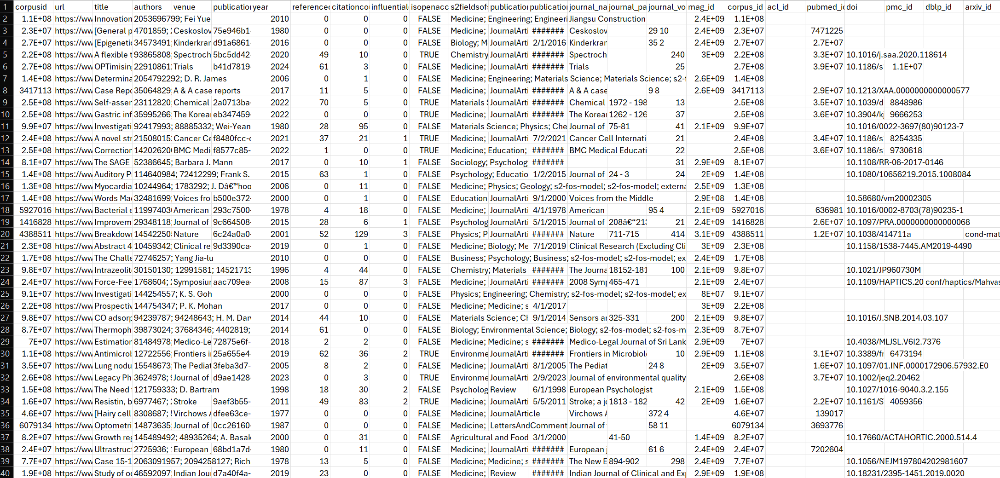

Figure 1. Simplified diagram for Neural Networks. Source
Neural Networks are supervised learning models built from simple connected units that process numerical inputs. Each unit applies a weighted sum to its inputs, adds a bias term, and passes the result through an activation function. This structure (as visualized in Fig. 1) allows the network to learn patterns that are not captured by basic linear methods.
Figure 1. Simplified diagram for Neural Networks. Source
A single unit computes a value of the form f(w · x + b), where w is a set of weights, x is the input vector, b is a bias, and f is an activation function such as ReLU or sigmoid (Fig. 2). By arranging many of these units into layers, the network transforms the data step by step until it reaches a final prediction.

Figure 2. Neural Network node. Source
Training relies on backpropagation, which is a procedure that measures how each weight contributes to the model’s error. The weights are then updated in the direction that reduces this error. Repeating this process over many epochs allows the network to improve its accuracy on labeled data.
Neural Networks require data that is both structured and labeled. Because they are supervised learning models, they learn by comparing their predictions to known outcomes. For this project, the dataset includes a set of input features along with a binary label that indicates one of two possible classes. Before any modeling can begin, the data must be cleaned, labeled, and organized into the correct format for training.
The first step is labeling. The original dataset contains only raw observations, so each row must be assigned a label that reflects the category it belongs to. Once labeling is complete, the data can be used for supervised methods such as Neural Networks, Naive Bayes, Decision Trees, SVMs, and other classification models. The labeled dataset shown below illustrates how each observation now includes both feature values and a target label.


Once the dataset is labeled, it must be divided into two disjoint subsets: a Training Set and a Testing Set. The Training Set is used to teach the neural network by adjusting its internal weights over many iterations. The Testing Set is used only after training is complete, allowing the model’s accuracy to be measured on data it has never seen before. Keeping these sets separate is essential because it prevents the model from memorizing the data and ensures that the evaluation reflects true generalization.
The Training Set contains 70% of the labeled data and is used during the learning process. The Testing Set contains the remaining 30% and is used to evaluate performance. Both sets were created using a randomized split to ensure that the distribution of labels remains consistent across each subset. This helps the neural network learn balanced patterns and prevents bias toward one class.


The labels used for the neural network are binary, meaning the model predicts one of two possible outcomes. This aligns with the project requirement of using a single output unit. With the data properly labeled, split, and formatted, it is ready to be passed into the neural network for training and evaluation.
The neural network model was implemented in Python using TensorFlow/Keras. The model includes one hidden layer with at least three units, uses activation functions for both hidden and output layers, and is trained over multiple epochs. After training, the model is evaluated using the Testing Set.
Below are the required images showing the confusion matrix and the last five epochs of training.


The neural network produced measurable accuracy on the Testing Set. The confusion matrix summarizes correct and incorrect classifications. The architecture diagram below illustrates the structure of the model, including the input layer, hidden layer, output layer, weight matrices, and activation functions.


This section summarizes what the neural network reveals about the topic, including patterns learned from the data and predictions supported by the model.